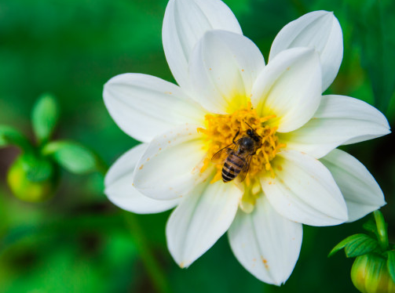

Atracción
El aroma que produce la flor, son herramientas que utilizan algunas flores para decirles a los polinizadores: "hey! ven, que estoy bien sabrosa".

Está compuesto por un grupo de granos de color amarillo que hacen posible la reproducción de las plantas con semillas. El polen de una flor debe llegar a otra, por medio del viento u otros organismos para fecundarla. A este proceso se le llama polinización.
Esta sustancia dulce atrae a organismos como abejas. De hecho, es su materia prima para producir miel.
El aroma que produce la flor, son herramientas que utilizan algunas flores para decirles a los polinizadores: "hey! ven, que estoy bien sabrosa".